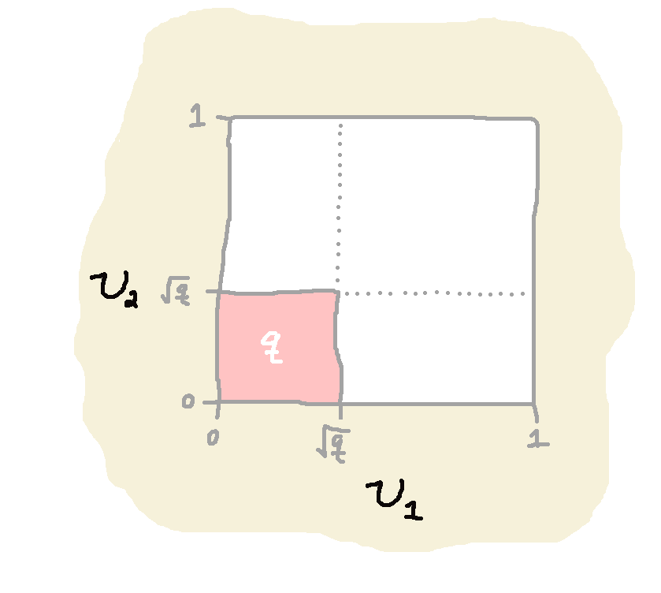
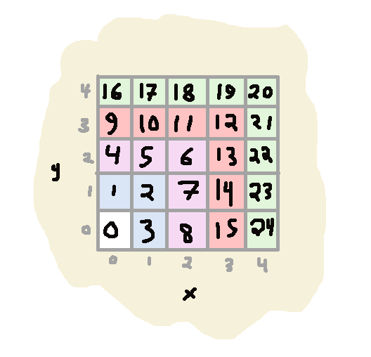

A Probability Distribution Puzzle
Here's a paraphrase of a little puzzle that came up at a weekly
dinner-with-local-friends.
Problem
Fix an integer $n \ge 2$.
Suppose I have random variables
\[(X_i = U_i^n)_{i=1\ldots n}\]
and $U_i \sim \mathrm{Uniform}(0,1)$ for all $i$.
Show that
\[\max(X_1, \ldots X_n) \sim \mathrm{Uniform}(0,1)\]
A Proof
We can see that $\max(X_1, \ldots X_n)$ has the same cumulative distribution
function as $\mathrm{Uniform}(0,1)$:
\[\mathrm{Pr}[\max(X_1, \ldots X_n) \le q] = \mathrm{Pr}[\max(U_1^n, \ldots U_n^n) \le q] \]
\[= \mathrm{Pr}[\max(U_1, \ldots U_n)^n \le q]
= \mathrm{Pr}[\max(U_1, \ldots U_n) \le q^{1/n}]\]
\[ = \mathrm{Pr}[(U_1 \le q^{1/n}) \land \cdots \land (U_n \le q^{1/n})]\]
\[ = \prod_{i=1}^n \mathrm{Pr}[(U_i \le q^{1/n})] = \prod_{i=1}^n q^{1/n} = (q^{1/n})^n = q\]
Visually

For the special case $n=2$, we can see that the event that
$\max(U_1^2, U_2^2) \le q$ is the same as when $U_1^2 \le q$ and
$U_2^2 \le q$, which corresponds to the square where $U_1 \le
\sqrt{q}$ and also $U_2 \le \sqrt{q}$, which naturally has area
$\sqrt{q}\sqrt{q} = q$.
An Alternative Suggestive "Proof"
Here's another intuitive angle that is also visual and more discrete.
Again for the special case $n=2$, observe that the two processes
give the same result:

- Uniformly choose an integer $s$ in the interval $[0,N^2)$, or
- Independently uniformly choose integers $x,y$ from the interval
$[0,N)$ and compute
\[ s = \begin{cases} \max(x,y)^2 + x & \hbox{if $y \ge x$;} \\ (\max(x,y)+1)^2 - 1 - y & \hbox{if $x \ge y$.} \end{cases} \]
(Check that this formula describes the diagram above for $N=5$)
In the continuous limit, we see that $\max(x/N, y/N)^2$ and $s/N^2$ have the same
distribution as $N \to \infty$. All the terms in the case-splitting formula
for $s$ that aren't $\max(x,y)^2$ are of lower order, and so vanish in the limit.